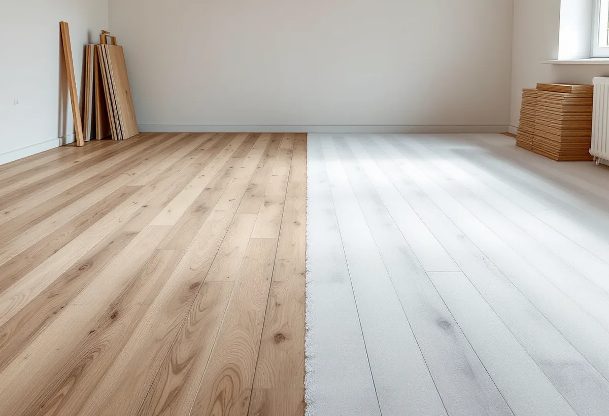

Platsbesök
Vi tittar på rummen, mäter ytorna och kontrollerar undergolv, trösklar och eventuellt slitskikt.
Vi lägger parkett, massiva trägolv, laminat och klinker i villor och lägenheter i hela Stockholm, och vi slipar och behandlar gamla trägolv. Före varje golv kontrollerar vi underlaget, eftersom ett ojämnt eller fuktigt undergolv är den vanligaste orsaken till att ett nytt golv knarrar, glipar eller buktar.
Valet av golv handlar mer om rummet än om smak. I hall och kök slits golvet av grus, väta och stolsben, i sovrum knappt alls. Ett golv som ska tåla många år i en hall behöver därför en tåligare yta än ett golv i ett gästrum, och det påverkar både material och ytbehandling.
Flerskiktsparkett har ett tunt toppskikt av ädelträ på en stomme av barrträ eller fiberskiva. Den läggs ofta flytande på en underlagsduk och går snabbt att få på plats. Massiva plankgolv av ek, ask eller furu spikas eller limmas och kan slipas ned genom en större del av tjockleken. Laminat är en tryckt yta på en fiberskiva, tåligt mot repor men inte möjligt att slipa om. Klinker passar i hall, kök och tvättstuga, där vatten och smuts kommer in.
Under klinker med golvvärme gäller särskilda regler. Byggkeramikrådet anger i sina svar på vanliga frågor att golvvärmen inte får slås på förrän tidigast 28 dygn efter plattsättningen, att temperaturen ska höjas långsamt och att ytskiktet inte får bli varmare än 27 °C. Ska golvet ligga i ett badrum blir det ett våtrumsjobb med tätskikt – läs mer om badrumsrenovering.

I äldre villor ligger golvet ofta på träreglar och golvspånskiva eller råspont, och med åren har bjälklaget satt sig. Där riktar vi upp, skruvar fast lösa skivor som knarrar och byter delar som har blivit mjuka. På betong eller gamla klinkergolv jämnar vi ut svackor med avjämningsmassa innan ytskiktet läggs, så att skarvarna i ett flytande golv inte glipar.
Betong är det känsliga fallet. Golvbranschen skriver i sin text om uttorkning av golvavjämning att trä tar upp fukt ur omgivningen och sväller när den relativa fuktigheten är hög, och att betongens fuktnivå bör kontrolleras innan avjämningen läggs. Kräver ytskiktet till exempel högst 85 procent RF, får betongen under inte ligga över den nivån.
Branschens limrekommendationer säger att en korrekt RF-mätning i underlaget görs av en fuktkontrollant med auktorisation från RBK. Fukt som stängs in mellan betong och golv kan bryta ned lim och golvmaterial och ge emissioner till inomhusluften. På en källare, en ny platta eller ett golv som har haft en vattenskada föreslår vi därför en mätning innan vi beställer material, och vi följer materialleverantörens anvisningar för lim och fuktspärr.
Ett massivt trägolv eller en parkett med tjockt slitskikt behöver sällan bytas. Repor, gråa gångstråk och gammal gulnad lack slipas bort med maskin i flera steg, från grovt till fint papper, och kanter och hörn tas med kantslip. Djupa hack, lösa stavar och springor åtgärdas innan finslipningen.
Hur mycket som går att slipa beror på hur tjockt träet är ovanför spontens överkant. Vi lyfter en tröskel eller en golvlist och mäter innan vi lovar något. Är slitskiktet för tunt eller golvet av laminat, är ett nytt golv rätt väg i stället för en slipning.
Efter slipningen väljer du yta. Lack lägger en hård film ovanpå träet som tål hårt slitage och lätt går att torka av. Olja tränger in i träet, ger en mattare yta och fräschas upp med ny olja där det slits, utan ny slipning. Såpa är den traditionella behandlingen på furugolv och kräver regelbunden såpskurning. Kulör kan läggas till, till exempel vitpigment på ek eller furu.
I en bostadsrätt står du själv för golvet i lägenheten, men bostadsrättslagens 7 kap. 7 § kräver styrelsens tillstånd för ingrepp i bärande konstruktion, ändring av ledningar för vatten, avlopp eller värme och andra väsentliga förändringar av lägenheten. Ett nytt parkettgolv brukar inte vara något av det, men golvvärme med vattenburen slinga eller ett golv där bjälklaget ska förstärkas eller ändras kan vara det. Läs föreningens stadgar och fråga styrelsen om den har egna krav på underlag och ljuddämpning.
I en villa är golvet oftast en del av ett större jobb, till exempel när en planlösning öppnas upp eller hela huset renoveras. Då samordnar vi golvet med övriga moment inom villarenovering, så att golvet läggs sist, efter målning och snickerier, och inte skadas under resten av bygget.
Vi tittar på rummen, mäter ytorna och kontrollerar undergolv, trösklar och eventuellt slitskikt.
Du får ett förslag där arbete och material står var för sig, med de förarbeten som behövs.
Möbler flyttas, gammalt golv rivs och undergolvet riktas upp eller jämnas ut. På betong mäts fukten vid behov.
Golvet läggs, spikas eller limmas, eller så slipas det befintliga golvet i flera steg.
Lack, olja eller såpa läggs på, och golvlister och trösklar monteras.
Vi går igenom golvet med dig och berättar hur ytan ska skötas.
Att slipa och byta golv finns med bland Skatteverkets exempel på rotarbeten, både i småhus och i bostadsrätt. Det gör också att sätta klinker och att måla golv. I ett småhus räknas dessutom en förbättring som att byta plastmatta mot trägolv.
Avdraget är 30 procent av arbetskostnaden och gäller bara arbetet, inte golvmaterial, lim eller resor. Varje person kan få högst 50 000 kronor i rotavdrag per år, och rot och rut får tillsammans uppgå till högst 75 000 kronor. Vi drar avdraget direkt på fakturan. Vid en slipning är nästan allt arbete, medan materialet väger tyngre när ett nytt golv läggs.
Antalet kvadratmeter är bara en del av kostnaden. Lika viktigt är hur mycket undergolvet behöver riktas eller jämnas ut, om gammalt golv ska rivas och forslas bort, hur många trösklar och dörrkarmar golvet ska passa mot, och vilket material du väljer. Vid slipning styr golvets skick, antalet skador som ska lagas och vald ytbehandling.
Därför börjar vi med ett gratis platsbesök. Efter besöket får du ett skriftligt kostnadsförslag med arbete och material var för sig, så att du ser vad ROT-avdraget gäller.
Trösklar, lister, dörrar och inredning.
Snickare i Stockholm →Väggar och tak innan golvet läggs.
Målare i Stockholm →Klinker och tätskikt i våtrum.
Badrumsrenovering i Stockholm →Hela huset med en kontakt.
Villarenovering →